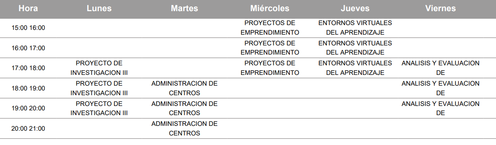

|
Universidad Central del Ecuador
Facultad de Filosofía, Letras y Ciencias de la Educación
Bienvenido
|
|
Presentación
|
Me llamo Edgar David Cacuango Perachimba
Vivo en la cuidad de Quito
Nací el 1 de abril de 1995, tengo 26 años
Estudio en la Universidad Central del Ecuador, Facultad de Filosofía, Letras y Ciencias de la Educación, Carrera de Pedagogía en Ciencias Experimentales Informática
Actualmente curso el Octavo Semestre
Mi aspiración es el aprender cada vez más sobre mi carrera, culminarla exitosamente y luego realizar en el extranjero una especialización. También me gustaría poder llegar a ser docente y compartir con estudiantes conocimientos y experiencias. En todas mis aspiraciones y metas, la universidad juega un papel muy importante, pues me apoya con mi desarrollo personal y profesional”.
|
Horario de Informática 2020
VIII B

Contacto
Número: 0983904737
Correo: edcacuango@uce.edu.ec